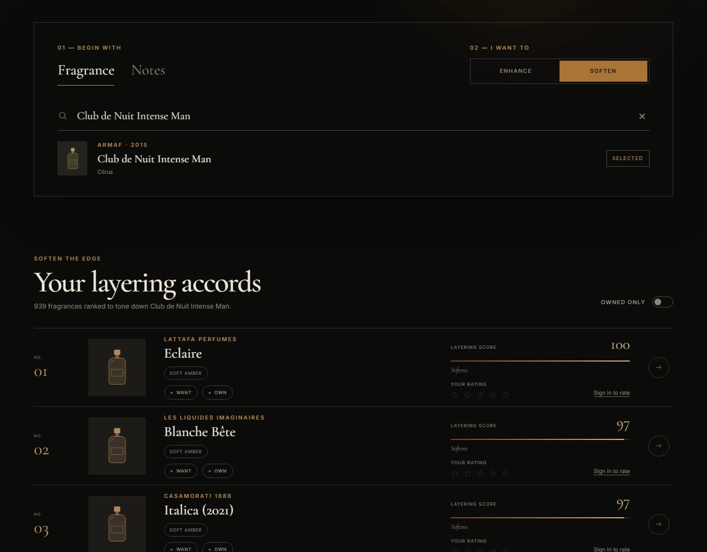

01 / 07
livefeatured
Scense
Ranks which fragrances to layer with one you already own, either to amplify it or to soften its edge. A math-based pairing engine scores every pair ahead of time, and a Claude-powered chat turns "I like warm, spicy things" into a taste profile.

- Pairing engine. 1,000 fragrances mapped onto the 14-family fragrance wheel; a Python pipeline precomputes 1.5M pair scores so a ranking is one indexed query. Fixed a similarity matrix with a negative eigenvalue so a bottle always matches itself best, with a test that fails the build if that ever breaks.
- CI/CD to AWS. GitHub Actions runs lint, typechecks, and 416 tests (Vitest, Supertest, pytest, Playwright), builds three Docker images, pushes to GHCR, and deploys to EC2 over SSH: migrations first, then a health check that fails the job if it isn't 200 within 60 seconds.
- Safe, cheap AI. The model never names a fragrance; it only turns words into weights and the server picks every bottle. Atomic per-visitor caps keep a full chat around $0.002.